Lesson 16 · Part 1 · Models and safety · 5 questions
Why an API is usually cheaper
Read first: Running a model on your own GPU
A GPU costs the same per hour whether it is busy or idle, and one person's agent leaves it idle most of the time. Providers can keep theirs busy by putting many users' requests into each pass over the weights. That is why an API is usually cheaper than your own GPU, and why self-hosting pays only in a few clear cases.
The idea
Picture a city bus. Fuel, the driver and the bus itself cost about the same with 1 passenger or 60. The fare is low because the bus is full all day. Now picture buying your own bus to get to work alone. It sits in the depot most of the day, and every trip costs you the whole bus.
A GPU running a model is that bus. In Reading fast, writing slow you saw that every new token needs a full pass over the weights, and that this pass is limited by memory bandwidth, not by maths. That one fact sets the economics:
- One pass can serve many users. The weights are read once per step. If 64 requests are in the batch, that same read produces 64 tokens, one for each.
- So a full GPU makes cheap tokens. The cost of the hour is split over everything it produced that hour.
- An idle GPU makes expensive ones. You pay for every hour you hold it, busy or not.

Up close
Batching, measured. Databricks tested a 7-billion-parameter model on one A100 GPU. Going from 1 request at a time to a batch of 64 raised throughput 14 times, while each request took 4 times longer. Total output goes up a lot; each user's stream gets somewhat slower. Batches can't grow forever: every request needs its own KV cache in GPU memory, and past a point the chip runs out of room or of compute.
Continuous batching. Requests finish at different times. Modern servers (vLLM, Hugging Face TGI, NVIDIA TensorRT-LLM) add and remove requests at every decode step, so a finished slot is refilled straight away instead of waiting for the whole batch. The story behind it is the fact below.
The break-even sum. The fair comparison is the same model on both sides. OpenAI's open-weight gpt-oss-120b fits on one 80 GB H100 GPU, and many hosts sell it by the token. Fireworks lists it at $0.15 per million input tokens, $0.015 for cached input and $0.60 for output. Together AI rents an H100 at $3.99 per GPU-hour. Providers don't publish their costs or margins, so these are just prices you can pay.
# $ per 1M tokens (Fireworks)
CACHED, NEW, OUT = 0.015, 0.15, 0.60
# ASSUMED agent step: 50k context,
# 48k of it cached, 500 out
cached, new, out = 48_000, 2_000, 500
step = (cached * CACHED
+ new * NEW
+ out * OUT) / 1e6
print(step) # $0.00132 per step
gpu_hour = 3.99 # H100 (Together)
print(gpu_hour / step) # ~3,000To tie with the API, the rented GPU must do about 3,000 agent steps in every hour you pay for. Assume an agent takes one step every 15 seconds while it works (a model reply, then a tool run): that is 240 steps an hour, so you need about 12 agents working nonstop, day and night.
Worked example
Same work two ways: at the API prices above ($0.32 per agent-hour, from 240 steps × $0.00132), or on an H100 rented around the clock ($3.99 × 720 hours = $2,873 per 30 days). Assumed use: 2 agent-hours per developer per working day, 22 working days a month.
| Who | Agent-hours a month | API | Rented GPU |
|---|---|---|---|
| You alone | 44 | $14 | $2,873 |
| Team of 10 | 440 | $139 | $2,873 |
| 50 developers | 2,200 | $697 | $2,873 |
| 12 agents, 24/7 | 8,640 | $2,737 | $2,873 |
Even the last row only ties, and it ignores the engineer who keeps the server patched and on call. Developers work in the daytime, so a GPU rented for them sits idle most nights and weekends. A card under your desk is the same: you paid for it whether it is busy or not.
When self-hosting does pay:
- The data must not leave. Regulation, a contract or an air-gapped network. Then the question is not price but where the model runs (see Frontier vs open-weight models).
- Huge, steady volume. A product feature busy around the clock can keep big batches full. Compare with batch API prices, not just standard ones.
- A model you must control. A fine-tuned model, or one version frozen for years.
Your turn
Question 1 · ~2 min
Your team rents an H100 around the clock at $3.99 an hour to run gpt-oss-120b for its agents. A month of logs shows it busy 3% of the time. What does each busy hour really cost, and how does that compare with one agent-hour at the API prices above ($0.32)?
Show answer
About $133 per busy hour, roughly 400 times more. The month costs $3.99 × 720 = $2,873, and 3% of 720 hours is about 22 busy hours. You pay for the GPU every hour, so all of the cost lands on those 22. The provider's GPUs are busy with other people's requests while yours waits.
Question 2 · ~2 min
Every night a job summarises the day's 5,000 merged PRs for a search index. Nobody reads the results before morning. It uses the normal API. What should you change?
Show answer
Send it through the provider's batch API. Anthropic and OpenAI both charge 50% less for batch requests, in exchange for results within 24 hours instead of seconds (Anthropic says most batches finish within an hour). The vendors don't say why, but a flexible deadline lets them run the work whenever their GPUs have room. You don't need speed here, so don't pay for it.
Question 4 · ~3 min
Model A costs a fifth as much per token as model B. On your tickets, A's PRs get merged 3 times out of 10, B's 8 times out of 10. Each rejected PR costs a reviewer about 15 minutes. Which is cheaper?
Hint
Show answer
Very likely B. For one merged PR, A needs about 3.3 attempts, 2.3 of them rejected: some 35 minutes of a reviewer. B needs about 1.25 attempts: some 4 minutes. A typical ticket costs cents to dollars in tokens, so an engineer's half hour dwarfs the difference. Measure cost per completed task, people's time included, not price per token.
Question 5 · ~3 min
Stretch: to break even, you plan 12 agents with 50,000-token contexts on one 80 GB H100 running gpt-oss-120b. Its weights take 65 GB. Its config has 36 layers, but only 18 keep the full context (the rest keep only the last 128 tokens), with 8 KV heads of size 64. Do 12 contexts fit?
Hint
Show answer
No. Per token: 18 × 8 × 64 × 2 × 2 = 36,864 bytes, so a 50,000-token context is about 1.8 GB. Twelve need about 22 GB, but only 15 GB is left after the weights, before the runtime takes its share. At most about 8 fit. So one GPU can't even hold the load that would make it break even.
Interesting fact: The paper that let requests leave the bus early
Early model servers batched requests the way you batch web jobs: start a group together, return the results when the whole group is done. For text generation that is wasteful, because one request may need 10 tokens and another 500. At OSDI 2022, Gyeong-In Yu and colleagues from Seoul National University and FriendliAI presented Orca. They pointed out that finished requests couldn't return to the user, and new ones had to wait for the whole batch to finish. Their fix, "iteration-level scheduling", rebuilds the batch at every decode step. On a 175-billion-parameter GPT-3-sized model spread over 16 A100 GPUs, at the same latency, Orca served 6.81 requests per second against 0.185 for NVIDIA's FasterTransformer: 36.9 times more. Under names like continuous or in-flight batching, the idea is now standard in vLLM, Hugging Face TGI and TensorRT-LLM.
Facts checked: November 2026 (Fireworks and Together AI pricing pages; Anthropic Message Batches and OpenAI Batch API docs; gpt-oss-120b model card and config; NVIDIA H100 specs; Databricks LLM inference guide; Anyscale continuous batching post; TensorRT-LLM docs; Yu et al., Orca, OSDI 2022).
Answers
- Question 1
About $133 per busy hour, roughly 400 times more. The month costs $3.99 × 720 = $2,873, and 3% of 720 hours is about 22 busy hours. You pay for the GPU every hour, so all of the cost lands on those 22. The provider's GPUs are busy with other people's requests while yours waits.
- Question 2
Send it through the provider's batch API. Anthropic and OpenAI both charge 50% less for batch requests, in exchange for results within 24 hours instead of seconds (Anthropic says most batches finish within an hour). The vendors don't say why, but a flexible deadline lets them run the work whenever their GPUs have room. You don't need speed here, so don't pay for it.
- Question 3
No, that's the trade-off. Each decode step now carries more requests, so it takes longer, and every user waits for every step. Databricks measured exactly this: batch 64 gave 14 times the throughput of batch 1, with each request 4 times slower. Pick the batch size from what users will accept, then add GPUs for more volume.
- Question 4
Very likely B. For one merged PR, A needs about 3.3 attempts, 2.3 of them rejected: some 35 minutes of a reviewer. B needs about 1.25 attempts: some 4 minutes. A typical ticket costs cents to dollars in tokens, so an engineer's half hour dwarfs the difference. Measure cost per completed task, people's time included, not price per token.
- Question 5
No. Per token: 18 × 8 × 64 × 2 × 2 = 36,864 bytes, so a 50,000-token context is about 1.8 GB. Twelve need about 22 GB, but only 15 GB is left after the weights, before the runtime takes its share. At most about 8 fit. So one GPU can't even hold the load that would make it break even.